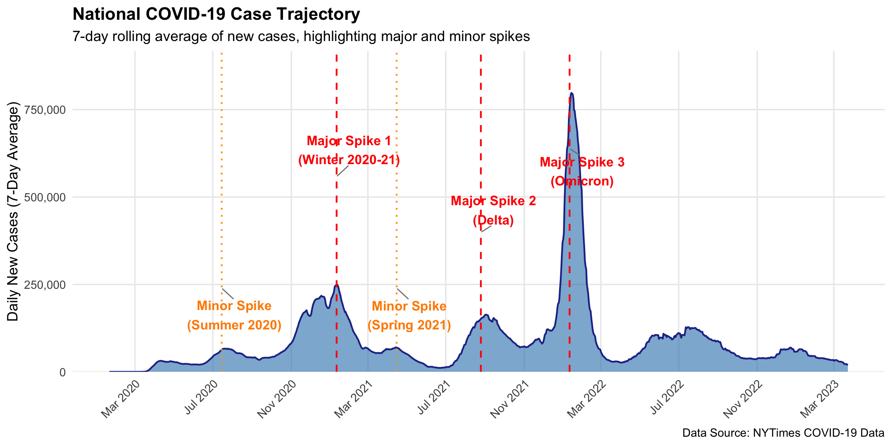
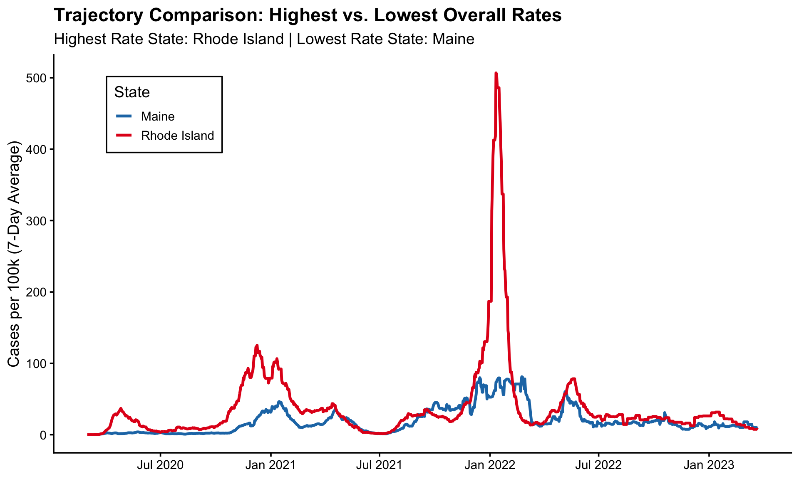
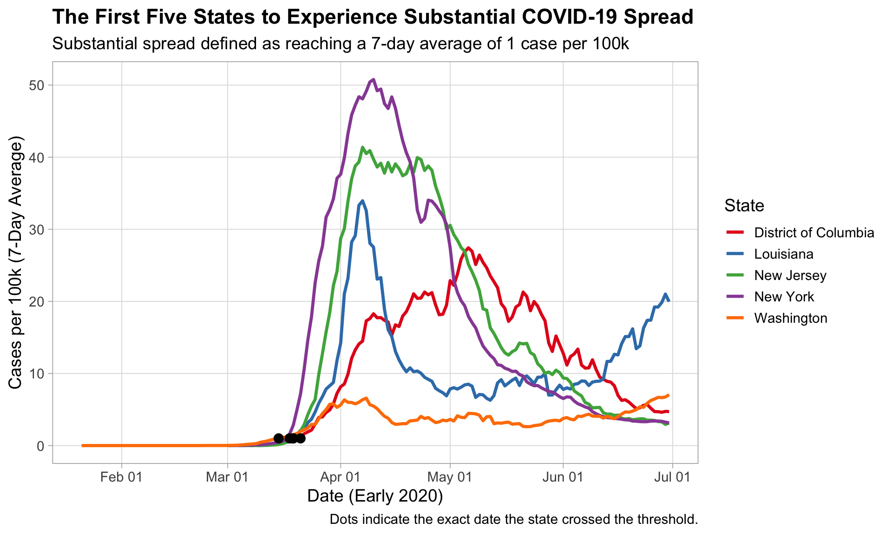

# Group by election year and voting type, then calculate total votesnzge %>%group_by(election_year, voting_type) %>%summarise(total_votes =sum(votes, na.rm =TRUE),.groups ="drop"# Drops grouping after summarise to avoid warnings ) %>%arrange(total_votes) %>%# Sort by total votes in ascending orderprint(n =Inf) # Print all rows
# A tibble: 10 × 3
election_year voting_type total_votes
<dbl> <chr> <dbl>
1 2002 Candidate 2022115
2 2002 Party 2040248
3 2011 Candidate 2225766
4 2011 Party 2257336
5 2005 Candidate 2260670
6 2005 Party 2286190
7 2008 Candidate 2325598
8 2008 Party 2356536
9 2014 Candidate 2375493
10 2014 Party 2416479
Explanation & Summary:
Code Logic: We use group_by() to separate the data by both election_year and voting_type (ensuring Candidate and Party votes are kept distinct). summarise() calculates the total sum of the votes column. arrange() sorts the resulting table.
Summary: The output shows that overall voter turnout (total votes cast) generally increased from 2002 to 2014. In every election year, there are slightly more Party votes cast than Candidate votes, which is typical as some voters may only cast a party vote.
# A tibble: 25 × 3
party votes percent
<chr> <dbl> <dbl>
1 National Party 1081787 45.5
2 Labour Party 801287 33.7
3 Green Party 165718 6.98
4 Conservative Party 81075 3.41
5 New Zealand First Party 73384 3.09
6 Maori Party 42108 1.77
7 MANA Movement 32333 1.36
8 Informal Candidate Votes 27886 1.17
9 ACT New Zealand 27778 1.17
10 United Future 14722 0.620
11 Aotearoa Legalise Cannabis Party 4936 0.208
12 Internet Party 4848 0.204
13 Democrats for Social Credit 4647 0.196
14 Ban1080 4448 0.187
15 Independent 3864 0.163
16 NZ Independent Coalition 1929 0.0812
17 Focus New Zealand 1797 0.0756
18 Money Free Party 391 0.0165
19 Communist League 135 0.00568
20 Climate Party 116 0.00488
21 Human Rights Party 76 0.00320
22 The Expats 70 0.00295
23 Alliance 59 0.00248
24 NZ Economic Euthenics Party 51 0.00215
25 Patriotic Revolutionary Front 48 0.00202
Explanation & Summary:
Code Logic: We use filter() to isolate the 2014 Candidate election data. After grouping by party and calculating the total votes, mutate() creates a new percent column by dividing each party’s votes by the overall sum of votes. arrange(desc()) ranks them from highest to lowest.
Summary: In the 2014 Candidate election, the National Party won the majority of the votes with approximately 45.5%, followed by the Labour Party at 33.7%. The table also includes “Informal Candidate Votes” (invalid votes), which is a standard inclusion in New Zealand’s official election data.
###c
# Find the winning party for each year and vote typenzge %>%# First, aggregate total votes per year, type, and partygroup_by(election_year, voting_type, party) %>%summarise(total_votes =sum(votes, na.rm =TRUE),.groups ="drop" ) %>%# Then, group by year and type to find the top partygroup_by(election_year, voting_type) %>%slice_max(order_by = total_votes, n =1, with_ties =FALSE) %>%ungroup() %>%# Keep only relevant columns and reshape the dataselect(election_year, voting_type, party) %>%pivot_wider(names_from = voting_type,values_from = party,names_prefix ="Winner_" ) %>%arrange(election_year) %>%print(n =Inf)
# A tibble: 5 × 3
election_year Winner_Candidate Winner_Party
<dbl> <chr> <chr>
1 2002 Labour Party Labour Party
2 2005 National Party Labour Party
3 2008 National Party National Party
4 2011 National Party National Party
5 2014 National Party National Party
Explanation & Summary:
Code Logic: We first calculate total votes per party per year per type. Then, slice_max() isolates the row with the highest votes for each election_year and voting_type. with_ties = FALSE ensures only one winner is returned. Finally, pivot_wider() reshapes the data so that the Candidate and Party winners are displayed side-by-side for each year.
Summary: The table reveals a major political shift in New Zealand. From 2002 to 2005, the Labour Party dominated the Party vote. However, starting in 2008, the National Party secured both the Candidate and Party votes and maintained this dominance through 2014. Interestingly, in 2005, the National Party won the most Candidate votes, but the Labour Party won the overall Party vote—a great example of how New Zealand’s MMP (Mixed-Member Proportional) electoral system works.
Through this analysis using tidyverse and dplyr, we successfully separated and analyzed Candidate and Party votes in New Zealand’s general elections. We observed that total votes have grown over time. Looking specifically at 2014, the National Party held a strong lead in Candidate votes. Furthermore, our year-by-year winner analysis highlighted the transition of power from Labour to National in 2008, and captured the nuanced 2005 election where the two vote types produced different winning parties. The use of piping (%>%) and modern dplyr functions ensured the code was readable, efficient, and free of deprecated functions.
#problem 2
# Load required librarieslibrary(tidyverse)#install.packages("infer")library(infer) # For Hypothesis Testing (Q3)# Read the data directly from the web (Raw link)url <-"https://raw.githubusercontent.com/azhou5849/tennis-atp-sackmann-data/master/atp_matches_2019.csv"atp <-read_csv(url)
Rows: 2806 Columns: 49
── Column specification ────────────────────────────────────────────────────────
Delimiter: ","
chr (14): tourney_id, tourney_name, surface, tourney_level, winner_entry, wi...
dbl (35): draw_size, tourney_date, match_num, winner_id, winner_seed, winner...
ℹ Use `spec()` to retrieve the full column specification for this data.
ℹ Specify the column types or set `show_col_types = FALSE` to quiet this message.
###a
# Count distinct tournament IDstournament_count <- atp %>%distinct(tourney_id) %>%count()print(tournament_count)
# A tibble: 1 × 1
n
<int>
1 128
There were 128 tournaments that took place in 2019.
###b
# Find the winners: Filter for the Final match of each tournamenttournament_winners <- atp %>%filter(round =="F") %>%distinct(tourney_id, winner_name)# Count how many titles each player wonwin_counts <- tournament_winners %>%count(winner_name, sort =TRUE)# Find how many players won >1 tournament and the maximum number of winsmultiple_winners_summary <- win_counts %>%filter(n >1) %>%summarise(players_with_multiple =n(),max_titles =max(n) )print(multiple_winners_summary)
# See who won the mostprint(win_counts %>%filter(n ==max(n)))
# A tibble: 2 × 2
winner_name n
<chr> <int>
1 Dominic Thiem 5
2 Novak Djokovic 5
12 players won more than one tournament in 2019. The most winning players were Dominic Thiem and Novak Djokovic, who each won 5 tournaments.
###c
library(infer)# 1. Reshape the data to a long format to compare Winners and Losersace_data <- atp %>%filter(!is.na(w_ace) &!is.na(l_ace)) %>%select(match_num, w_ace, l_ace) %>%pivot_longer(cols =c(w_ace, l_ace),names_to ="role",values_to ="aces" ) %>%mutate(role =if_else(role =="w_ace", "Winner", "Loser") )# 2. Calculate the observed difference in meansobserved_diff <- ace_data %>%group_by(role) %>%summarise(mean_aces =mean(aces)) %>%summarise(diff = mean_aces[role =="Winner"] - mean_aces[role =="Loser"]) %>%pull(diff)# 3. Permutation Test using the 'infer' packageset.seed(123)null_dist <- ace_data %>%specify(response = aces, explanatory = role) %>%hypothesize(null ="independence") %>%generate(reps =1000, type ="permute") %>%calculate(stat ="diff in means", order =c("Winner", "Loser"))# 4. Calculate p-valuep_value <- null_dist %>%summarise(p_value =mean(stat >= observed_diff)) %>%pull(p_value)print(paste("Observed difference:", round(observed_diff, 2)))
[1] "Observed difference: 1.7"
print(paste("P-value:", round(p_value, 4)))
[1] "P-value: 0"
Yes, there is strong evidence. The observed difference in means is 1.7, meaning winners hit an average of 1.7 more aces per match than losers. The permutation test yielded a p-value of 0 (or < 0.001), indicating this difference is highly statistically significant.
###d
# Reshape the data to a long formatplayer_winrate <- atp %>%select(winner_name, loser_name) %>%pivot_longer(cols =c(winner_name, loser_name), names_to ="role", values_to ="player") %>%mutate(won =if_else(role =="winner_name", 1, 0)) %>%group_by(player) %>%summarise(matches =n(),wins =sum(won),win_rate = wins / matches,.groups ="drop" ) %>%filter(matches >=5) %>%arrange(desc(win_rate))print(player_winrate %>%slice_max(win_rate))
# A tibble: 1 × 4
player matches wins win_rate
<chr> <int> <dbl> <dbl>
1 Rafael Nadal 69 60 0.870
Among players with at least 5 matches, Rafael Nadal had the highest win rate. He played 69 matches, won 60, and achieved a win rate of 87.0%.
library(tidyverse)library(ggrepel)library(scales)# 1. Calculate the national daily averagenational_data <- covid_clean %>%group_by(date) %>%summarise(national_avg =sum(cases_avg, na.rm =TRUE))# 2. Find the maximum peak for label positioningmax_cases <-max(national_data$national_avg, na.rm =TRUE)# 3. Create a data frame for the labelslabel_data <-tibble(date =as.Date(c("2021-01-11", "2021-08-25", "2022-01-11", "2020-07-15", "2021-04-15")),y_pos =c(max_cases *0.7, max_cases *0.5, max_cases *0.8, max_cases *0.3, max_cases *0.3),label =c("Major Spike 1\n(Winter 2020-21)", "Major Spike 2\n(Delta)", "Major Spike 3\n(Omicron)", "Minor Spike\n(Summer 2020)", "Minor Spike\n(Spring 2021)"),type =c("Major", "Major", "Major", "Minor", "Minor"))# 4. Plot the trajectoryp1 <-ggplot(national_data, aes(x = date, y = national_avg)) +geom_area(fill ="#2c7fb8", alpha =0.6) +geom_line(color ="#253494", linewidth =0.8) +# Add vertical linesgeom_vline(xintercept = label_data$date[label_data$type =="Major"], linetype ="dashed", color ="red", linewidth =0.8) +geom_vline(xintercept = label_data$date[label_data$type =="Minor"], linetype ="dotted", color ="orange", linewidth =0.8) +# Add labels using ggrepel to avoid overlappinggeom_text_repel(data = label_data,aes(x = date, y = y_pos, label = label, color = type),fontface ="bold",size =4.5,nudge_x =20, direction ="y", box.padding =0.8, force =2, min.segment.length =0, segment.color ="grey50",show.legend =FALSE ) +# Formattingscale_color_manual(values =c("Major"="red", "Minor"="darkorange")) +scale_y_continuous(labels = comma, expand =expansion(mult =c(0, 0.15))) +scale_x_date(date_labels ="%b %Y", date_breaks ="4 months") +labs(title ="National COVID-19 Case Trajectory",subtitle ="7-day rolling average of new cases, highlighting major and minor spikes",x =NULL, y ="Daily New Cases (7-Day Average)",caption ="Data Source: NYTimes COVID-19 Data" ) +theme_minimal(base_size =14) +theme(plot.title =element_text(face ="bold"),axis.text.x =element_text(angle =45, hjust =1),panel.grid.minor =element_blank() )print(p1)

National COVID-19 Case Trajectory: 7-day rolling average of new cases, highlighting major and minor spikes.
By observing the national 7-day average, we can identify three major spikes and several minor spikes in COVID-19 cases.
The major spikes align with distinct variant-driven waves: the Winter 2020-2021 surge, the Delta variant (Fall 2021), and the massive Omicron variant (Winter 2022). The minor spikes occurred during the Summer of 2020 and Spring of 2021.
This visualization supports the argument that COVID-19 transmission was not a single continuous outbreak, but rather occurred in distinct, variant-driven waves separated by periods of relative decline.
###b
# 1. Calculate the overall rate for each state and identify the extremesstate_overall <- covid_clean %>%group_by(state) %>%summarise(total_rate =sum(cases_avg_per_100k, na.rm =TRUE)) %>%arrange(desc(total_rate))highest_state <- state_overall$state[1]lowest_state <- state_overall$state[nrow(state_overall)]# 2. Filter data for only these two statestop_bottom_data <- covid_clean %>%filter(state %in%c(highest_state, lowest_state))# 3. Create the plotp2 <-ggplot(top_bottom_data, aes(x = date, y = cases_avg_per_100k, color = state)) +geom_line(linewidth =1.2) +# Use distinct colors for the highest and lowest statesscale_color_manual(values =setNames(c("#e31a1c", "#1f78b4"), c(highest_state, lowest_state))) +scale_y_continuous(labels = comma) +scale_x_date(date_labels ="%b %Y", date_breaks ="6 months") +# Formatting for publicationlabs(title ="Trajectory Comparison: Highest vs. Lowest Overall Rates",subtitle =paste("Highest Rate State:", highest_state, "| Lowest Rate State:", lowest_state),x =NULL,y ="Cases per 100k (7-Day Average)",color ="State" ) +theme_classic(base_size =14) +theme(plot.title =element_text(face ="bold"),legend.position =c(0.15, 0.85), # Place legend in the top-left empty spacelegend.background =element_rect(fill ="white", color ="black") )print(p2)

Trajectory Comparison: Highest vs. Lowest Overall Rates. The x-axis shows time, and the y-axis shows the 7-day average cases per 100k.
The state with the highest overall rate (Rhode Island) and the state with the lowest overall rate (Maine) show highly synchronized trajectories in terms of timing, but massive differences in magnitude.
Both states experienced their major peaks at roughly the same times (e.g., Winter 2020-21, the Delta wave in late 2021, and the Omicron wave in Winter 2022). This synchronization strongly suggests that national or global events (such as holiday travel and the emergence of new variants) drove the timing of the waves across the country.
However, Rhode Island’s peaks are drastically taller than Maine’s, particularly during the Omicron surge where Rhode Island peaked at over 500 cases per 100k compared to Maine’s ~80 cases per 100k. This indicates that while the timing was dictated by national trends, local factors—such as population density or state-level public health policies—played a crucial role in amplifying the absolute impact of each wave.
###c
# 1. Identify the first five states to cross the 1 case/100k thresholdearly_2020 <- covid_clean %>%filter(date <=as.Date("2020-06-30")) %>%filter(cases_avg_per_100k >=1) %>%group_by(state) %>%summarise(first_date =min(date)) %>%arrange(first_date) %>%slice_head(n =5)# 2. Filter data for these five statesfirst_five_data <- covid_clean %>%filter(state %in% early_2020$state, date <=as.Date("2020-06-30"))# 3. Plot the trajectoriesp3 <-ggplot(first_five_data, aes(x = date, y = cases_avg_per_100k, color = state)) +geom_line(linewidth =1.2) +# Mark the threshold pointsgeom_point(data = early_2020, aes(x = first_date, y =1), size =3, inherit.aes =FALSE) +# Formattingscale_color_brewer(palette ="Set1") +scale_y_continuous(labels = comma) +scale_x_date(date_labels ="%b %d", date_breaks ="1 month") +labs(title ="The First Five States to Experience Substantial COVID-19 Spread",subtitle ="Substantial spread defined as reaching a 7-day average of 1 case per 100k",x ="Date (Early 2020)",y ="Cases per 100k (7-Day Average)",color ="State", # 添加图例标题caption ="Dots indicate the exact date the state crossed the threshold." ) +theme_light(base_size =14) +theme(plot.title =element_text(face ="bold"),legend.position ="right", # 将图例放在右侧，清晰不遮挡panel.grid.minor =element_blank() )print(p3)

The First Five States to Experience Substantial COVID-19 Spread. The dots indicate the exact date the state crossed the threshold of 1 case per 100k.